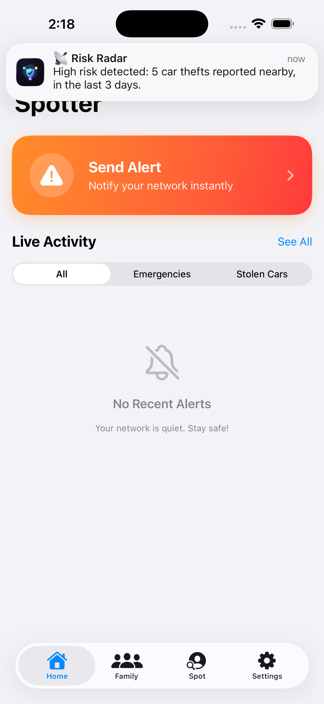
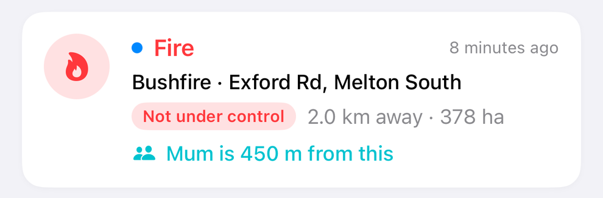
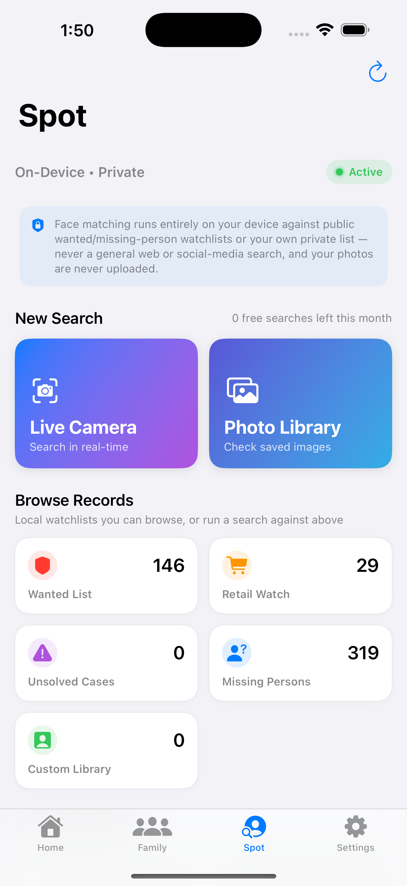
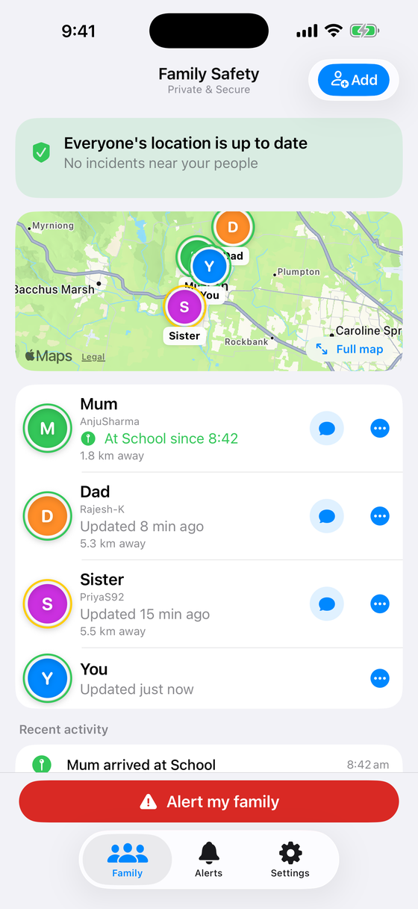
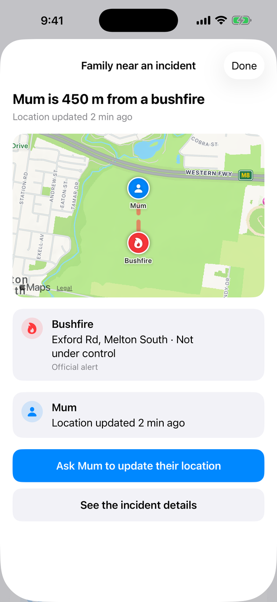
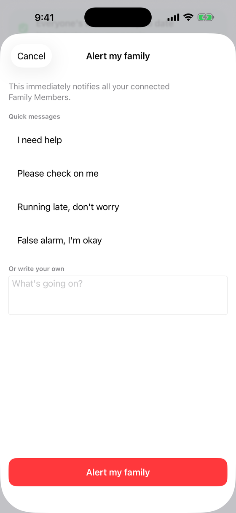
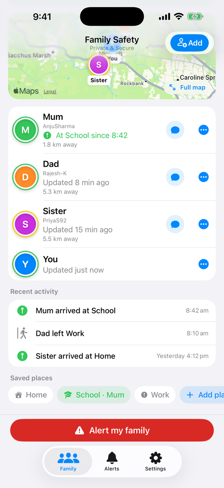
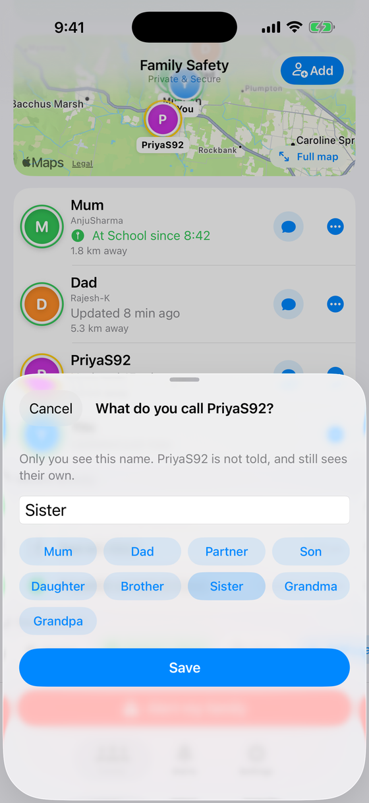
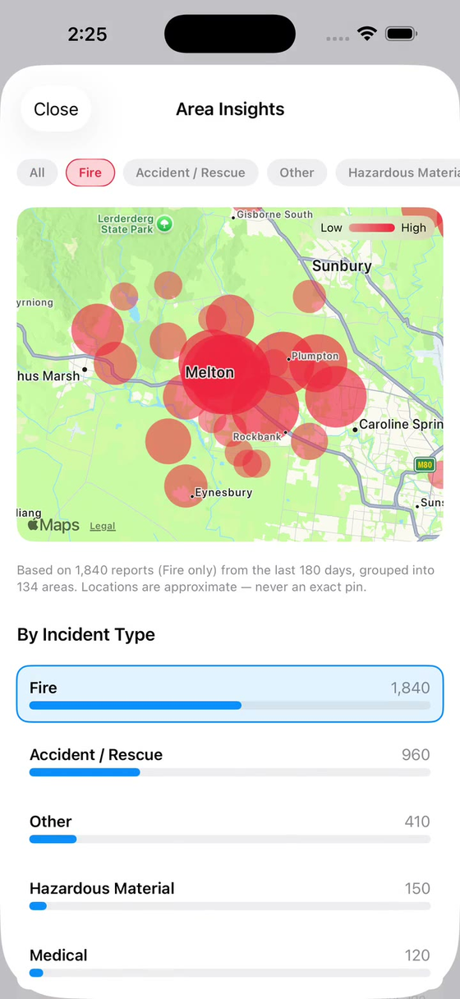

Engineered for awareness.
We completely reimagined community safety. No ads, no tracking, just powerful tools to keep your neighborhood and family secure.
📡 Risk Radar NEW
Spotter keeps watch in the background, comparing the places you travel through with real incident reports: car thefts, accidents, fires and more. If you are about to enter an area where something has been happening, you get a heads-up, even when the app is closed, so you can take precautions before you arrive. Quiet until it matters, and at most one warning per area a week.

Spot Flares
Alert your community instantly about local hazards and incidents. Drop a flare, and notify everyone nearby in milliseconds. The live feed shows how far each alert is from the people you care about.

On-Device AI
Scan against your secure vault entirely on-device using advanced CoreML. No cloud processing means total privacy and instant results.

Family Map
Keep track of your loved ones on a private map, and call them what you call them: Mum, Dad, Sam. Invites need approval on both sides. Pause sharing anytime, or share an approximate, suburb-level location instead of your exact position.

Know When Family Is Near an Alert NEW
If someone you love is within 1 km of a fire or accident, Spotter tells you, with their distance, and you can ask “Are you OK?” in one tap. Only when their location is recent and shared with you, never a guess.

One-Tap Safety Alert
Send an instant alert with a custom message to your family circle when you need help — no fumbling through menus in an urgent moment.

Home, School, Work NEW
Save up to five places that matter, such as Home, School and Work, and your family is told when you arrive or leave: “Anju arrived at School · 8:42 am”. Everyone sees how everyone else is doing without a single phone call. A recent-activity list lets you look back, you choose who is told for each place, and nothing is sent while sharing is paused.

Call Them Mum or Dad NEW
Give each person the name you use for them. Only you see it, and notifications use it too: “Mum is 450 m from this.” You choose how your own family sees you as well.

Area Insights NEW
A heat map of what has been happening around you, by type of incident, so you can see the pattern and not just the latest alert. Locations are approximate, never an exact pin.

Missing Persons
Browse profiles sourced from the National Missing Persons Coordination Centre, and optionally run an on-device face match against your camera to help.
Share Straight from Any App
Got a photo from a doorbell camera, a group chat, or a news article? Share it directly into Spotter to run a face match, without leaving the app you're in.
Filter the Noise
Set how close an alert has to be before you hear about it, from 1 km up to 10 km for each type of alert, so you only get what is actually relevant to you.
Privacy-First Mapping
Reporting shouldn't compromise your safety. For non-critical alerts, Spotter uses location obfuscation, showing a generalized shaded zone instead of your exact GPS pin.